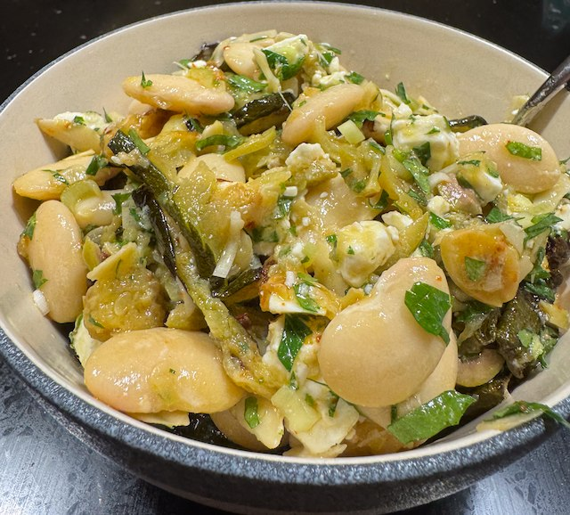

Courgette and butter bean salad

Serves: 4
Cook Time: 45 min
From bbc good food
Ingredients
- 2 courgette, thin slices
- 1 400g tin butter beans, drained
- salt and pepper
- 1 garlic clove, crushed
- 1 lemon, zest and juice
- 2 tbsp olive oil
- ½ tsp chilli flakes
- 10g parsley, chopped
- 10g mint, chopped
- 10g basil, chopped
- 100g green olives, chopped
- 2 spring onions, chopped
- 100g feta cheese, diced
- 2 tbsp toasted almond flakes
Method
Cook the courgette. Put the slices of courgette on an oven tray with olive oil and salt and cremate in the oven on 200°C for 30 min.
Make the salad. But the beans in a bowl, then work down the ingredients list mixing in. Add the courgettes and mix again.